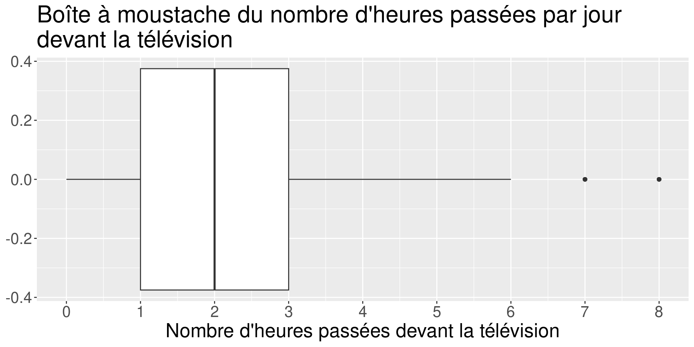
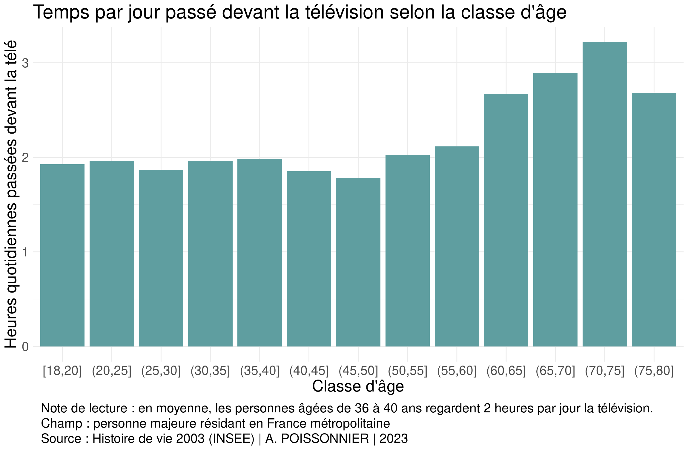
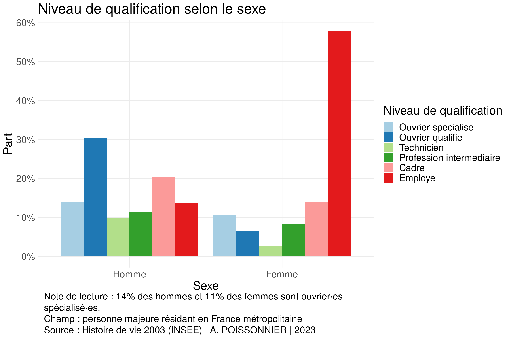
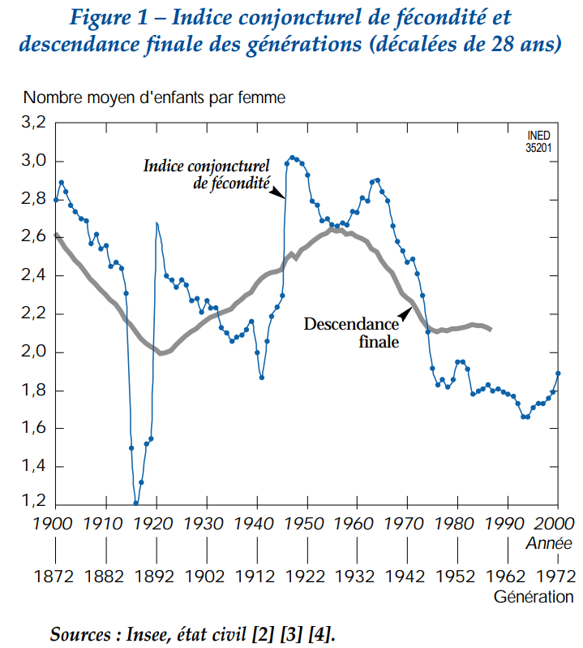

Correction de certains éléments du DM
Les erreurs de code dans votre rendu ont été surlignées ou commentées. Il faut consulter la correction du DM pour comparer votre code au mien.
Rappel sur le raisonnement statistique inférentiel
Lecture d’un tableau croisé, test du Khi2 et de Student

50% de la population regarde la télévision moins de 2 heures par jour, 50% de la population la regarde plus de 2 heures par jour.
Il faut regarder moins d’1 heure par jour la télé pour faire partie des 25% de la population qui regarde le moins la télé.
Il faut regarder plus de 3 heures par jour la télé pour faire partie des 25% de la population qui regarde le plus la télé.
Les 50% de la population qui ont une consommation intermédiaire regardent la télé entre 1 heure et 3 heures par jour. Autrement dit, il ne faut pas regarder moins de 1 heure ni regarde plus de 3 heures la télévision par jour pour être dans la norme.
La note de lecture permet de s’assurer de la bonne compréhension d’un graphique. Elle correspond à un exemple de lecture pour chaque dimension du tableau ou de la représentation graphique présentés.
Le champ doit rappeler la population de référence. Quand certaines catégories sont ambigues, il faut préciser ce que celles-ci recouvrent. Par exemple, les retraité·es sont parfois regroupé·es dans la catégorie “inactif” et parfois rattaché·es à leur ancienne position professionnelle.
La source indique l’origine des données, l’auteur·e et la date de production. . . .
En moyenne, les étudiant·es sont les plus jeunes (âge moyen : 21 ans) et passent le moins de temps devant la télévision (temps quotidien moyen : 1,3 heures).
En moyenne, les retraité·es sont les plus âgé·es (âge moyen : 70 ans) et passent le plus de temps devant la télévision (temps quotidien moyen : 2,8 heures).
En moyenne, les chômeur·es et les personnes employé·es ont des âges proches (respectivement 35 ans et 39 ans). Néanmoins, les chômeur·es passent plus de temps devant la télévision (temps quotidien moyen : 2,8 heures) que les personnes employé·es (temps quotidien moyen : 1,8 heures).
Tous comme les différents indicateurs statistiques (moyenne, variance, corrélation), les représentations graphiques n’ont pas toujours vocation à être utilisées dans l’argumentation scientifique finale. La majorité des visualisations graphiques ne sont pas publiées. Elles servent à explorer les données et à accompagner la construction de l’objet de recherche.
Elles permettent de tester temporairement des hypothèses ou d’identifier des régularités sociales à partir de la distribution des données : est-ce que les niveaux de qualifications semblent être répartis à peu près similairement chez les hommes et chez les femmes ? Est-ce que le nombre moyen d’heures passées devant la télé a l’air de croître avec l’âge ?


Si les traitements statistiques et les représentations graphiques semblent aller dans le sens d’une hypothèse scientifique, il faut alors s’assurer de leur fiabilité vis-à-vis de la question de recherche.
Les statistiques descriptives correspondent (dans un sens restreint) aux opérations de calcul réalisées sur des populations exhaustives. Cela dépend de la base de données : recensement de la population vs enquêtes par questionnaires; bases administratives complètes vs collecte de données de terrain.
On appelle population de référence la population que l’on souhaite étudier : les étudiant·es, les entreprises du CAC40, les député·es de l’Assemblée Nationale etc.
Les statistiques inférentielles correspondent aux opérations réalisées sur une partie de la population de référence, appelée échantillon, dans le but de tirer des conclusions fiables sur celle-ci. La fiabilité de nos affirmations dépend de la représentativité de notre échantillon – ce qui implique de mettre en place des procédures d’échantillonnage et de pondération adéquates – et de ses effectifs.
L’essentiel de l’analyse quantitative en science sociale repose sur l’estimation de paramètres à l’aide d’estimateurs ainsi que sur l’élaboration de modèles confirmés ou infirmés par des tests d’hypothèse.
On peut vouloir décrire la structure d’âge d’une population en calculant la moyenne de l’âge (le paramètre M). Comme on dispose rarement d’information sur l’ensemble de la population, on réalise une estimation de la valeur réelle du paramètre grâce à un outil statistique, la moyenne observée (m). La théorie statistique permet de construire des intervalles de confiance renseignant sur la qualité de cette estimation. Elle peut être très précise ou au contraire imprécise.
On peut vouloir savoir si le niveau de qualification professionnelle est dépendant du genre, c’est-à-dire si le niveau de qualification diffère en fonction du genre des individus. On doit ici aussi souvent partir d’un échantillon observé et mettre en place des thèses d’hypothèse pour conclure, selon un certain niveau de risque ou seuil de confiance, s’il existe ou non un lien entre les variables étudiées.
Tiré du Raisonnement statistique en sociologie, Selz et Mailllochon, 2009
| Typologie des familles par classe d'âge en 2003 | |||
| Catégorie d'âge | Type de famille (en %) | ||
|---|---|---|---|
| pas de frères et soeurs | 1 à 3 frères et soeurs | plus de 3 frères et soeurs | |
| 18 à 30 ans | 9% | 70% | 20% |
| 31 à 60 ans | 7% | 55% | 38% |
| 61 ans et plus | 14% | 57% | 29% |
| Ensemble | 9% | 59% | 32% |
| Lecture : en 2003, 7% des personnes âgées de 31 à 60 ans n’avaient pas de frères et soeurs. Dans l’ensemble, 9% de la population française toutes catégories d’âge confondues n’avaient pas de frères et soeurs Champ : personnes majeures habitant en France métropolitaine Source : Histoire de Vie 2003 (N = 2000) | A. POISSONNIER | 2023 |
|||
Les personnes âgées de 18 à 30 ans sont sur-représentées parmi les familles d’1 à 3 frères et soeurs (70% contre 59% dans l’ensemble) et sous-représentées parmi les familles de plus de 3 frères et soeurs (20% contre 32% dans l’ensemble).
Les personnes âgées de 31 à 60 ans sont sous-représentées parmi les familles d’1 à 3 frères et soeurs (55% contre 59% dans l’ensemble) et sur-représentées parmi les familles de plus de 3 frères et soeurs (38% contre 32% dans l’ensemble).
Les personnes de plus de 61 ans sont sur-représentées parmi les familles uniques (14% contre 9% dans l’ensemble).
| Typologie des familles par classe d'âge en 2003 | |||
| Catégorie d'âge | Type de famille (en %) | ||
|---|---|---|---|
| pas de frères et soeurs | 1 à 3 frères et soeurs | plus de 3 frères et soeurs | |
| 18 à 30 ans | 9% ± 2% | 70% ± 0% | 20% ± 1% |
| 31 à 60 ans | 7% ± 1% | 55% ± 0% | 38% ± 0% |
| 61 ans et plus | 14% ± 1% | 57% ± 0% | 29% ± 1% |
| Ensemble | 9% | 59% | 32% |
| Lecture : en 2003, 7% des personnes âgées de 31 à 60 ans n’avaient pas de frères et soeurs. Dans l’ensemble, 9% de la population française toutes catégories d’âge confondues n’avaient pas de frères et soeurs Champ : Individus de 18 ans et plus habitant en France métropolitaine Source : Histoire de Vie 2003 (N = 2000) | A. POISSONNIER | 2023 |
|||
Le test du Khi2 sert à tester la dépendance entre des variables catégorielles à plusieurs modalités. Il repose sur une idée simple : si les effectifs du tri croisé de deux variables sont très différents des effectifs qu’on devrait observer si les deux variables étaient indépendantes, alors on peut raisonnablement conclure qu’elles n’ont pas d’effets l’une sur l’autre. Voilà pourquoi on part d’abord du tableau de contingence qui présente les effectifs observés du croisement de deux variables.
| Tableau de contingence : effectifs observés | ||||
| Catégorie d'âge | Type de famille | Ensemble | ||
|---|---|---|---|---|
| pas de frères et soeurs | 1 à 3 frères et soeurs | plus de 3 frères et soeurs | ||
| 18 à 30 ans | 33 | 242 | 76 | 351 |
| 31 à 60 ans | 72 | 616 | 473 | 1 161 |
| 61 ans et plus | 62 | 260 | 166 | 488 |
| Ensemble | 167 | 1 118 | 715 | 2 000 |
Il faut par la suite adopter un raisonnement conditionnel : si les deux variables étaient indépendantes, quels seraient nos effectifs ? Ce sont les effectifs marginaux (les totaux d’ensemble) qui nous permettent de calculer ces valeurs.
On sait que la catégorie d’âge 18 à 30 ans représente \(\frac{351}{2000}=17,55\%\) de la population.
On sait que les familles uniques représentent \(\frac{167}{2000}=8,35\%\) de la population.
Par déduction, parmi les 18-30 ans, soit \(17,55\%\) des \(2000\) individus, il devrait y en avoir \(8,35\%\) qui appartiennent à une famille unique. On obtient \(29\) individus.
| Tableau de contingence : effectifs observés | ||||
| Catégorie d'âge | Type de famille | Ensemble | ||
|---|---|---|---|---|
| pas de frères et soeurs | 1 à 3 frères et soeurs | plus de 3 frères et soeurs | ||
| 18 à 30 ans | 33 | 242 | 76 | 351 |
| 31 à 60 ans | 72 | 616 | 473 | 1 161 |
| 61 ans et plus | 62 | 260 | 166 | 488 |
| Ensemble | 167 | 1 118 | 715 | 2 000 |
Le tableau des effectifs théoriques contient bien de nouvelles valeurs pour les cases des catégories, mais les mêmes valeurs pour les cases d’ensemble. Il faut maintenant mesurer à quel point ces deux tableaux diffèrent : on calculera simplement des écarts.
| Tableau de contingence : effectifs théoriques | ||||
| Catégorie d'âge | Type de famille | Ensemble | ||
|---|---|---|---|---|
| pas de frères et soeurs | 1 à 3 frères et soeurs | plus de 3 frères et soeurs | ||
| 18 à 30 ans | 29 | 196 | 125 | 351 |
| 31 à 60 ans | 97 | 649 | 415 | 1 161 |
| 61 ans et plus | 41 | 273 | 174 | 488 |
| Ensemble | 167 | 1 118 | 714 | 2 000 |
Ainsi, la valeur du Khi2 est donnée par la formule :
\[ {\chi}^2=\sum_{i,j}^{}\frac{(Eff^{theo}_{i,j}-Eff^{obs}_{i,j})^2}{Eff^{theo}_{i,j}} \]
| Tableau de contingence : écarts au carré rapportés à l'effectif théorique | ||||
| Catégorie d'âge | Type de famille | Ensemble | ||
|---|---|---|---|---|
| pas de frères et soeurs | 1 à 3 frères et soeurs | plus de 3 frères et soeurs | ||
| 18 à 30 ans | (29 - 33)2/29 | (196 - 242)2/196 | (125 - 76)2/125 | 351 |
| 31 à 60 ans | (97 - 72)2/97 | (649 - 616)2/649 | (415 - 473)2/415 | 1 161 |
| 61 ans et plus | (41 - 62)2/41 | (273 - 260)2/273 | (174 - 166)2/174 | 488 |
| Ensemble | 167 | 1 118 | 715 | 2 000 |
La statistique de test \(\chi^2\) donne donc une mesure de l’écart à l’indépendance : jusqu’à quel point ce qu’on observe est éloigné d’une situation où il n’y aurait pas de lien entre les variables ?
Le test statistique part de la valeur du \(\chi^2\) et la compare avec les écarts qu’on considérerait comme étant le fruit du hasard. Grâce à la loi Normale, on sait modéliser l’aléa de sous forme de probabilités, donc le risque de se tromper en concluant quelque chose à partir des écarts observés.
L’hypothèse nulle du test est celle qu’on essaie souvent de rejeter : la catégorie d’âge et le type de famille n’ont pas de lien entre eux
L’hypothèse alternative est celle qu’on accepte quand l’hypothèse nulle est rejetée : la catégorie d’âge et le type de famille sont bien interdépendants
La logique est similaire à celle d’un procès : on suppose qu’une personne est innocente jusqu’au point où on a assez d’éléments pour raisonnablement juger qu’elle ne l’est pas, même s’il y a toujours un risque de se tromper.
La p-value, c’est le plus petit niveau de risque tel qu’on peut encore rejeter l’hypothèse nulle. Au vu de la grandeur ou de la petitesse des écarts à l’indépendance mesuré par le \(\chi^2\), est-ce qu’en affirmant qu’il y a un lien entre les variables je risque de me tromper dans 50%, dans 10% ou dans seulement 1% des cas ? En général, on prend comme niveau de risque acceptable 10% pour affirmer que la relation est significative.
Mais attention :
C’est un seuil arbitraire qui s’est cristallisé dans la pratique mais il n’y a aucune justification mathématique à ce niveau.
Quand p est supérieur au seuil, c’est soit qu’il y a interdépendance, soit que votre échantillon était trop petit pour conclure avec fiabilité sur l’interdépendance des variables.
p ne mesure pas l’intensité de la relation entre les deux variables, seulement la significativité du lien.
p n’est pas la probabilité que les deux variables soient interdépendantes. C’est seulement la probabilité de se tromper en affirmant cela à partir de ce que vous avez observé !
Le type de famille et la catégorie d’âge sont-ils interdépendantes ?
## Test d'indépendance du Khi2 avec pondération
# Utilisation du package survey
library(survey)
# On crée une base de données qui tient compte de la pondération
hdv2003_ponderes <- svydesign(ids = ~ 1,
data = hdv2003,
weights = hdv2003$poids)
# On utilise les fonctions du package survey pour faire le test
svychisq(formula = ~cat_age+type_fam,
design = hdv2003_ponderes)
Pearson's X^2: Rao & Scott adjustment
data: svychisq(formula = ~cat_age + type_fam, design = hdv2003_ponderes)
F = 10.697, ndf = 3.9378, ddf = 7871.6107, p-value = 1.523e-08La valeur du Khi2 associé au tri croisé de la catégorie d’âge et du type de famille est d’environ 59.
Cette valeur aboutit à une p-valeur extrêmement petite : il y a 11 zéros après la virgule ! On rejette donc l’hypothèse nulle au profit de l’hypothèse alternative au seuil de 1% (pas besoin de dire au seuil de 0,000…1%), selon laquelle ces deux variables sont bien interdépendantes.
Pearson's Chi-squared test
data: hdv2003$sexe and hdv2003$type_fam
X-squared = 0.043188, df = 2, p-value = 0.9786La valeur du khi2 associé au tri croisé du sexe et du type de famille est inférieure à 0,1
La p-valeur est extrêmement élevée. Il y a plus de 95% de chances de se tromper en affirmant que le sexe et la structure familiale sont interdépendants. On est dans une sorte d’impasse : on ne peut pas rejeter l’hypothèse nulle, mais on ne peut pas dire qu’elle est vérifiée !
Un plus grand échantillon pourrait être capable d’appréhender des effets subtiles du sexe des enfants sur les comportements de fécondité des parents, par exemple si les parents cherchent à avoir un nouvel enfant quand le premier est une fille. Cela établirait in fine un lien entre ces deux variables qui n’est pas perceptible avec seulement 2000 enquêté·es. En l’état, on ne peut donc rien dire.
Les conclusions tirées des tests d’hypothèse sont ne concernent donc que lespossibilités d’inférence de nos données. Elles n’ont de sens que lorsque ces tests sont mis en place pour répondre à une question de recherche et lorsqu’ils sont suivis d’une interprétation sociologique. Il faut toujours se demander :
La (non)-significativité de mes résultats est-elle surtout le fruit des catégories choisies, de la taille de mon échantillon et de la façon dont il a été constitué, ou est-elle vraisemblable d’un point de vue sociologique ?
Exemple : une enquête réalisée sur internet interroge le lien entre l’âge et le fait de posséder un portable et un ordinateur. Elle trouve que les senior ne détiennent pas significativement moins d’ordinateurs et de portables que les plus jeunes.
Est-ce que le lien statistique mis en lumière suggère un lien de causalité entre ces variables, qui a un vrai sens sociologique, ou ai-je seulement identifié une corrélation peu intéressante, qui cache une troisième variable explicative, voire fallacieuse, le lien n’étant que le pur fruit du hasard ?
Exemple : une enquête par questionnaire cherche à savoir si les parisien·nes ont plus souvent des accidents de voiture que les habitant·es du reste du territoire français. Elle trouve au contraire que les parisien·nes sont sous-représenté·es parmi les accidents mineurs et graves.
Quelles sont les connaissances sociologiques et les résultats empiriques d’autres recherches qui peuvent expliquer le lien d’interdépendance indiqué par les tests ?
| Typologie des familles par classe d'âge en 2003 | |||
| Catégorie d'âge | Type de famille (en %) | ||
|---|---|---|---|
| pas de frères et soeurs | 1 à 3 frères et soeurs | plus de 3 frères et soeurs | |
| 18 à 30 ans | 9% | 70% | 20% |
| 31 à 60 ans | 7% | 55% | 38% |
| 61 ans et plus | 14% | 57% | 29% |
| Ensemble | 9% | 59% | 32% |
| Lecture : en 2003, 7% des personnes âgées de 31 à 60 ans n’avaient pas de frères et soeurs. Dans l’ensemble, 9% de la population française toutes catégories d’âge confondues n’avaient pas de frères et soeurs Champ : personnes majeures habitant en France métropolitaine Source : Histoire de Vie 2003 (N = 2000) | A. POISSONNIER | 2023 |
|||

Les personnes âgées de 18 à 30 ans en 2003 sont nées entre 1973 et 1985; de 31 à 60 ans entre 1943 et 1972; de 61 ans et plus avant 1943
Le lien entre la catégorie d’âge et la typologie familiale s’explique en partie par les différences générationnelles de fécondité. Les 31-60 ans correspondent grossièrement aux générations nées pendant le baby-boom.
La logique des tests d’hypothèses vue dans le cadre du \(\chi^2\) est valable pour tout un ensemble de tests qui servent des objectifs précis. Le test de Student permet de comparer la moyenne de deux groupes distincts.
Welch Two Sample t-test
data: heures.tv by sexe
t = -0.62219, df = 1955.7, p-value = 0.5339
alternative hypothesis: true difference in means between group Homme and group Femme is not equal to 0
95 percent confidence interval:
-0.2051015 0.1063062
sample estimates:
mean in group Homme mean in group Femme
2.219330 2.268727
Welch Two Sample t-test
data: heures.tv by cinema
t = 8.6488, df = 1977.5, p-value < 2.2e-16
alternative hypothesis: true difference in means between group Non and group Oui is not equal to 0
95 percent confidence interval:
0.5078710 0.8057376
sample estimates:
mean in group Non mean in group Oui
2.517848 1.861044
Design-based t-test
data: heures.tv ~ sexe
t = 0.98807, df = 1993, p-value = 0.3232
alternative hypothesis: true difference in mean is not equal to 0
95 percent confidence interval:
-0.09570646 0.29006822
sample estimates:
difference in mean
0.09718088
Design-based t-test
data: heures.tv ~ cinema
t = -6.4033, df = 1993, p-value = 1.891e-10
alternative hypothesis: true difference in mean is not equal to 0
95 percent confidence interval:
-0.7981794 -0.4238941
sample estimates:
difference in mean
-0.6110367